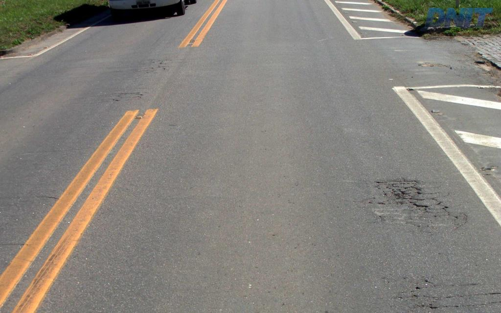
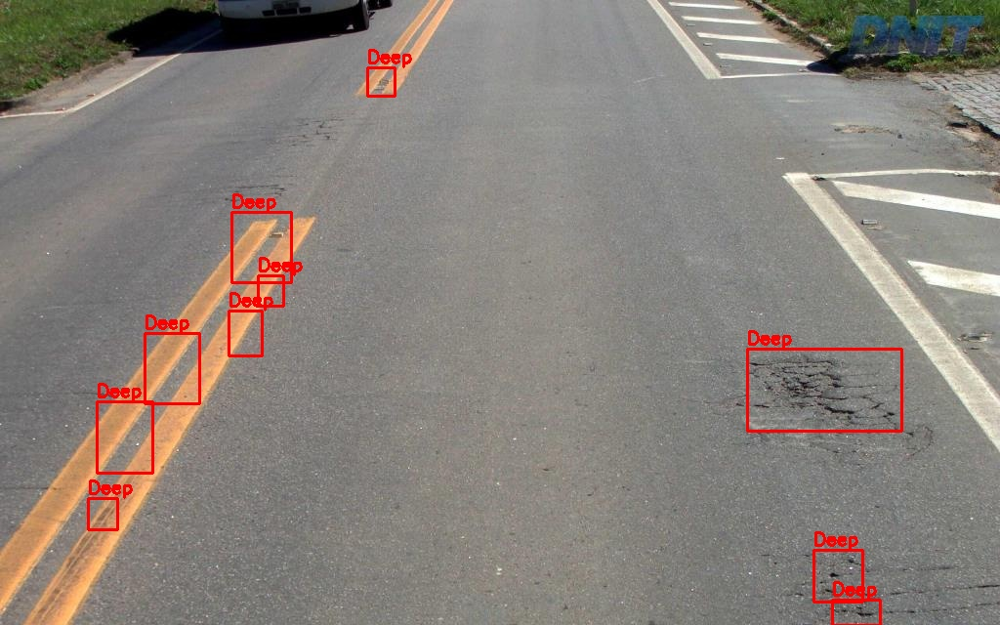

Mini Project for MCA 1st Year 2nd Semester, Osmania University. Go to Project homepage here
Team Members:
This project implements a basic road crack and pothole detection system using image analysis. The system uses OpenCV and SciPy libraries to detect cracks and potholes in the images. The system is trained on a dataset of images of roads to detect cracks and potholes. The system is designed to detect cracks and potholes in images of roads and provide the coordinates of the detected cracks and potholes. The system can be used to detect cracks and potholes in real-time images of roads. The project uses the following steps to detect cracks and potholes:

Original Image

Processed Image